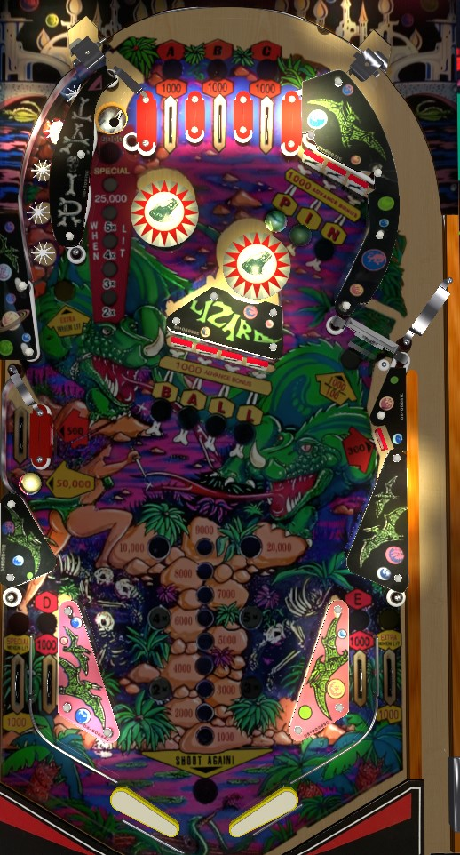

This game has incredibly similar rules to Sharpshooter, Old Coney Island!, and Sharp Shooter II (1979, 1979, and 1983 respectively, all also by Game Plan).
If you can reliably use the right flipper to shoot the 50,000 middle side lane on the left from below, that should be the only thing you focus on. Otherwise: shoot the saucer in the top left until bonus multiplier is maxed out at 5x, then shoot the spinner with the left flipper or the left orbit shot with the right flipper to take advantage of star rollovers that are lit for a bonus advance or the spinner that is lit for 1,000 points per spin.
The letters in ABCDE can be collected from the three top lanes and the two in lanes. Lanes always score 1,000 points; rolling through an unlit lane lights that letter and scores a bonus advance. Collecting a ABCDE letter for the first time lights one of the rollovers in the left orbit for 1,000 points and a bonus advance. Spelling ABCDE advances the bonus multiplier, unlights the ABCDE letters, and lights an extra ball that alternates between the left orbit and the right out lane based on various switch hits.
Each target down in either drop target bank scores 1,000 points and a bonus advance. Completing both banks advances the bonus multiplier and resets them. There is no reason to shoot these drop targets: the same or better rewards can be obtained with other, more controllable shots around the playfield.
Score 100 points, or 1,000 when lit. Once a bumper is lit, it stays lit for the rest of the game. There are two standup targets about halfway up the playfield that score 500 points: hitting either of these targets will light both pop bumpers for the rest of the game.
The middle left side lane is always lit for 50,000 points. A very precise shot can make the lane from below via the right flipper; otherwise, it takes a lucky ricochet to end up in this lane.
Each star rollover in this lane scores 100 points when not lit, or 1,000 points plus a bonus advance when lit. Lighting a unique ABCDE letter for the first time lights a star rollover. Once a star rollover is lit, it stays lit for the rest of the game. Lighting 3+ star rollovers in this lane makes the star lane the best way to build your end of ball bonus. The 4th star rollover in this lane (counting from the bottom) increases the multiplier on the left saucer's value, whether the star itself is lit or not.
Each shot to this saucer advances the bonus multiplier and scores 5,000 points times the saucer multiplier, which is raised by the final star rollover in the star lane, up to a maximum of 25,000 points. If ABCDE or PINBALL is completed when the bonus multiplier is already maxed out at 5x, this saucer and the left out lane will be lit alternately for a special for the rest of that ball. Once the special is collected, the saucer is worth a flat 25,000 points for the rest of that ball, no matter what the saucer multiplier was advanced to. This saucer is the most efficient way to earn bonus multipliers, and since multipliers always carry from ball to ball, it's the most important shot on the table early in a game.
Scores 100 points per spin, or 1,000 when lit. The spinner is lit whenever the bonus multiplier is 2x or higher. The spinner shot is always the best use of a ball that is in control on the left flipper, unless it is possible to backhand the upper left saucer.
Pinball Lizard has a conventional in/out lane setup. The in lanes award the D (left) and E (right) in ABCDE. The right out lane is occasionally lit for extra ball once ABCDE has been spelled. The left out lane is occasionally lit for Special by spelling ABCDE or PINBALL after the bonus multiplier was already maxed out at 5x.
Bonus is advanced by shooting an unlit ABCDE lane, any PINBALL drop target, or any lit star rollover in the star lane. Bonus multiplier is advanced by spelling ABCDE, spelling PINBALL, or shooting the upper left saucer. Max bonus is 5x 29,000 = 145,000 points. Bonus multiplier is always carried from ball to ball, but base bonus is always reset. There is no mid-ball bonus collect.
Special can be set to award an extra ball, but there is a max of one extra ball per ball in play. It does not seem to be possible to set special and extra ball to score points instead.